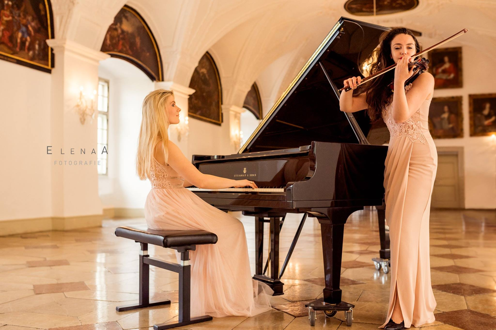
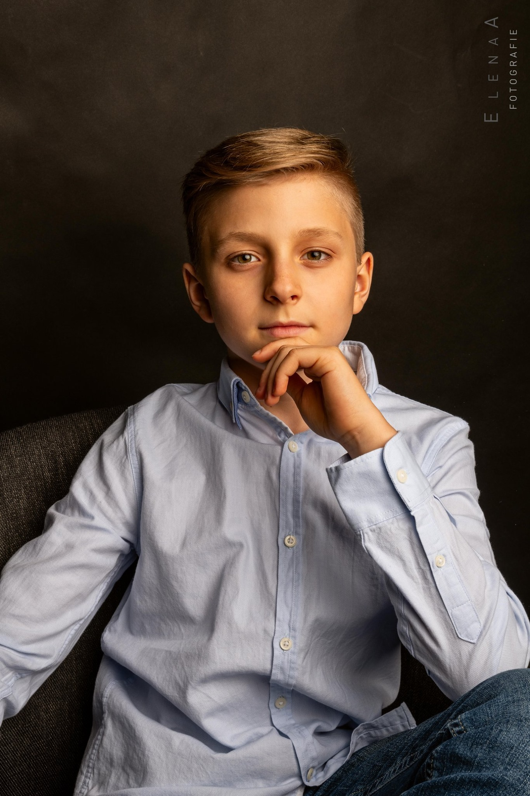
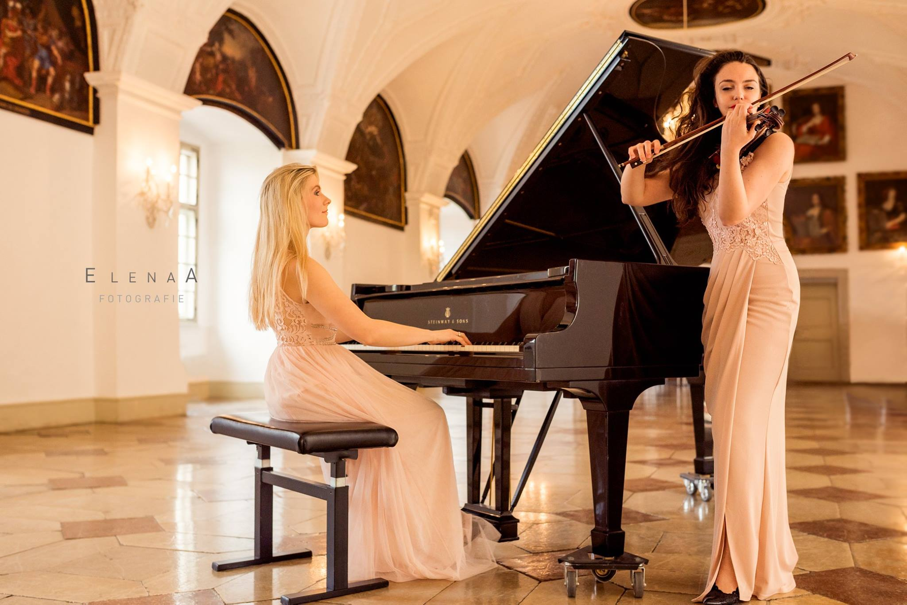
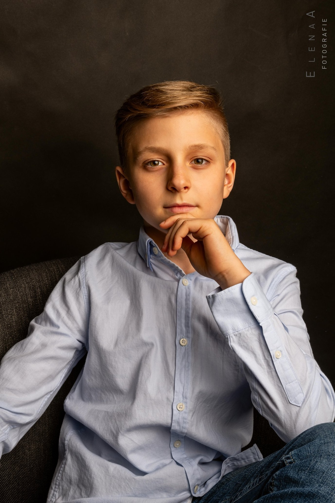

Geschenkgutscheine
A photosession can be a wonderful gift for a loved one, a married couple, and even for children (if they like to wriggle and attract attention, undoubtedly).
Sonderangebote
Poppy fields are incredibly scenic places. Have time to get photos on the background of this miracle of nature. Get your spring photosession with a discount now.
Vorbereitung Ihres Fotoshootings
For many photoshoot - exciting event. But do not worry, I will tell you how to prepare for photography
 Ivan Kupala Party (4 pictures)
Ivan Kupala Party (4 pictures) Meine musikalische Perle (8 pictures)
Meine musikalische Perle (8 pictures)  Zoya Zavyalova (12 pictures)
Zoya Zavyalova (12 pictures) Frühling ist immer in unseren Herzen (5 pictures)
Frühling ist immer in unseren Herzen (5 pictures) Pianist (6 pictures)
Pianist (6 pictures) Der Frühling mit Elena Schwarz (10 pictures) Zwei begabten Künstlerinnen (4 pictures)Ein Porträt für den kleinen, begabten Pianist (2 pictures)
Der Frühling mit Elena Schwarz (10 pictures) Zwei begabten Künstlerinnen (4 pictures)Ein Porträt für den kleinen, begabten Pianist (2 pictures) Ninas Erstkommunion (2 pictures)
Ninas Erstkommunion (2 pictures) Blumen-Feen (4 pictures)
Blumen-Feen (4 pictures)